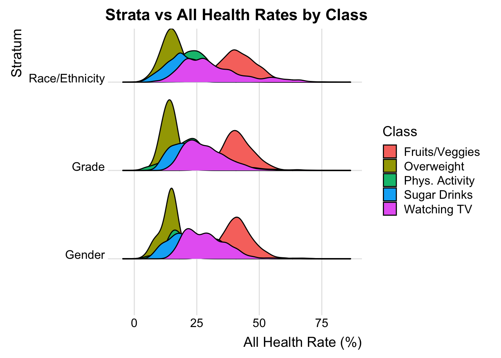
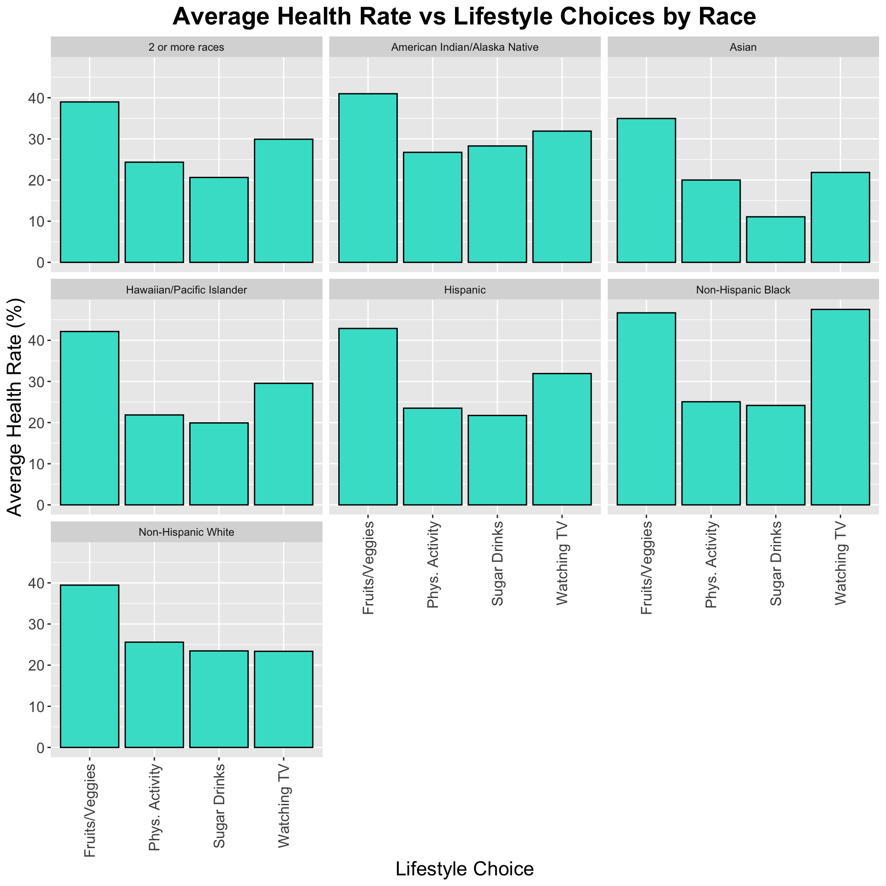
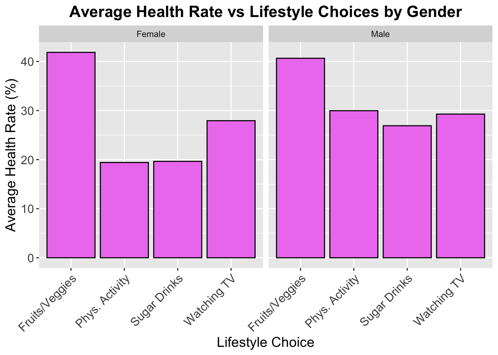
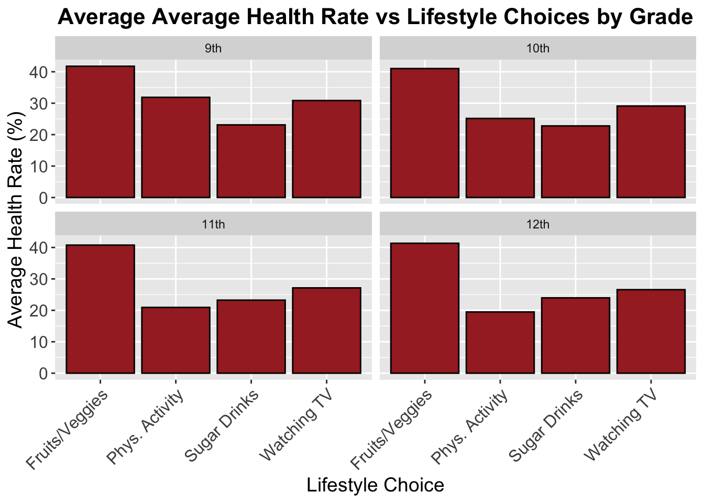
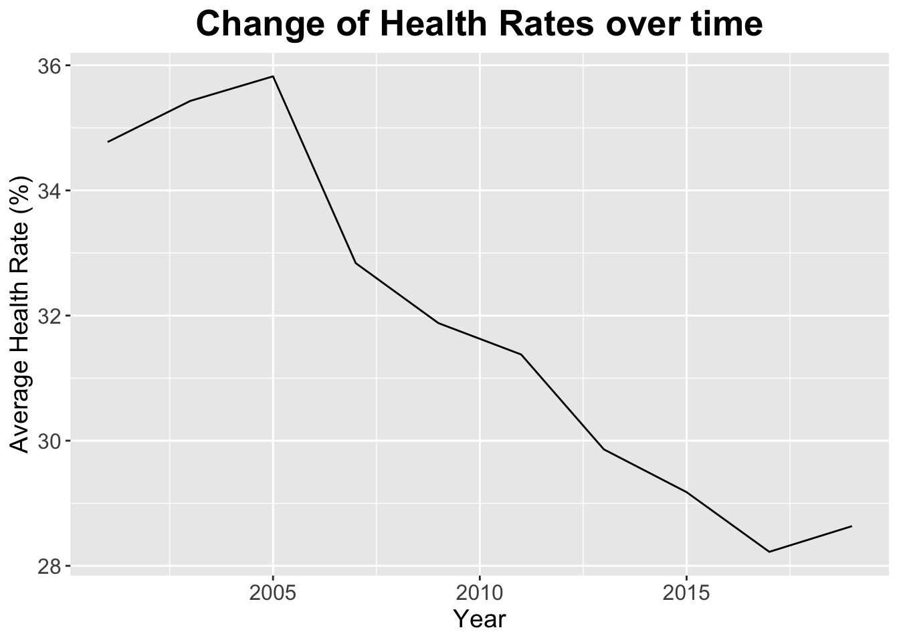
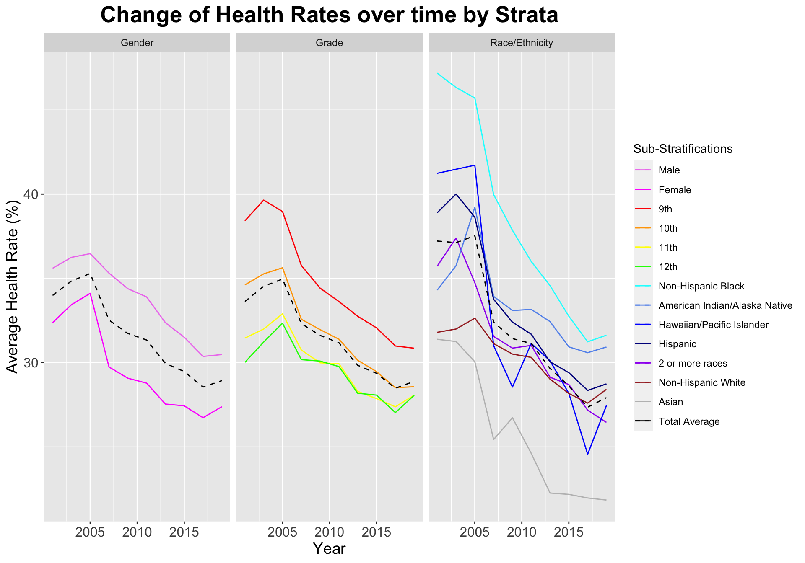

Before diving into relationships between the strata, health rates, and obesity rates, we first want to understand the relationship between our categorical variables.
This mosaic plot shows that the stratum and classes are very proportionate, suggesting independence between the variables. In particular, the “Race/Ethnicity” and “Grade” stratifications have very proportionate data. Similarly, the “Fruits/Veggies” and “Obesity / Weight Status” classes have very similar distributions of data. The mosaic plot also shows that these 4 categories have the most amount of data collected because they have the largest areas. Because the “Obesity / Weight Status” class has a significant amount of data collected, we can be confident in singling out this class when answering some of our questions.
Code
class_strata <- data_final |>select(YearEnd, Class, `Data_Value`,StratificationCategory1, Stratification1) |>filter(StratificationCategory1 !="Total") |>mutate(Class =recode(Class, `Fruits and Vegetables`='Fruits/Veggies', `Physical Activity`='Phys. Activity', `Sugar Drinks`='Sugar Drinks', `Television Viewing`="Watching TV", `Obesity / Weight Status`="Overweight"))library(ggridges)ggplot(class_strata, aes(x=`Data_Value`, y=StratificationCategory1, fill=Class)) +geom_density_ridges(scale=0.8) +theme_ridges() +theme(plot.title =element_text(hjust=0.5, color="black", size=16, face="bold"),axis.title.x =element_text(size=14),axis.title.y =element_text(size=14)) +labs(title="Strata vs All Health Rates by Class", x="All Health Rate (%)", y="Stratum")

This ridgeline plot allows us to understand the distribution of the obesity rates for each class among the strata. As shown, the “Fruits/Veggies” class contributes to the highest obesity percentages among all strata. Furthermore, the “Obesity / Weight Status” class has the highest density and most amount of data collected, affirming what we saw in the mosaic plot before.
3.2 Question 1: Stratum vs Obesity Rate
In this section, we will tackle the relationship between each stratum and average obesity rates using data from the “Obesity / Weight Status” class.
The bar plots each show the average obesity rates for each race, gender, and grade. As seen in the first plot, Non-Hispanic Black people have the highest average obesity rates compared to Asian people who have the lowest average obesity rates. In addition, Males have a higher average obesity rate by approximately 2.5%. Finally, there is an negative correlation between high school students and obesity rates; as the students age, the obesity rates decline.
3.3 Question 2: Lifestyle Choices vs Health Status
In this section, we will try to understand how the lifestyle choices of highschoolers affect their health. We will specifically be looking at their fruit and vegetable intake, physical activity, sugary drink intake, and amount of time spent watching TV.
Code
lifestyle_race <- data_final |>select(Class, `Data_Value`, StratificationCategory1, Stratification1) |>filter(Class !="Obesity / Weight Status") |>filter(StratificationCategory1 =="Race/Ethnicity") |>group_by(Class,Stratification1) |>summarise("AVG Health %"=mean(Data_Value)) |>mutate(Class =recode(Class, `Fruits and Vegetables`='Fruits/Veggies', `Physical Activity`='Phys. Activity', `Sugar Drinks`='Sugar Drinks', `Television Viewing`="Watching TV"))ggplot(lifestyle_race, aes(x=Class, y=`AVG Health %`)) +geom_bar(stat="identity", color="black", fill="turquoise") +facet_wrap(~Stratification1) +theme(plot.title =element_text(hjust=0.5, color="black", size=20, face="bold"),axis.title.x =element_text(size=16),axis.title.y =element_text(size=16),axis.text =element_text(size=12)) +labs(title="Average Health Rate vs Lifestyle Choices by Race", x="Lifestyle Choice", y="Average Health Rate (%)") +scale_x_discrete(guide =guide_axis(angle =90))

This bar plot, faceted by race, shows us the average health rates based on specific lifestyle choices. As shown, the common factor is that all races appear to have high percentages of low fruit and vegetable intake. The next nearly common factor is that most races have high percentages of excessive time spent watching TV. Finally, most races tend to have higher physical activity than sugary drink intake. These lifestyle choices are clear indicators of poor health and potential causes of further complex health conditions.
Code
lifestyle_gender <- data_final |>select(Class, `Data_Value`, StratificationCategory1, Stratification1) |>filter(Class !="Obesity / Weight Status") |>filter(StratificationCategory1 =="Gender") |>group_by(Class,Stratification1) |>summarise("AVG Health %"=mean(Data_Value)) |>mutate(Class =recode(Class, `Fruits and Vegetables`='Fruits/Veggies', `Physical Activity`='Phys. Activity', `Sugar Drinks`='Sugar Drinks', `Television Viewing`="Watching TV"))ggplot(lifestyle_gender, aes(x=Class, y=`AVG Health %`)) +geom_bar(stat="identity", color="black", fill="violet") +facet_wrap(~Stratification1) +theme(plot.title =element_text(hjust=0.5, color="black", size=16, face="bold"),axis.title.x =element_text(size=14),axis.title.y =element_text(size=14),axis.text =element_text(size=12)) +labs(title="Average Health Rate vs Lifestyle Choices by Gender", x="Lifestyle Choice", y="Average Health Rate (%)") +scale_x_discrete(guide =guide_axis(angle =45))

This bar plot, faceted by gender, shows us the average health rates based on specific lifestyle choices. This plot shows similar conclusions as the previous plot; high percentages of low fruit and vegetable intake and high percentages of excessive time spent watching TV. One difference is that females have similar physical activity and sugary intake percentages whereas males follow the previously mentioned trend.
Code
lifestyle_grade <- data_final |>select(Class, `Data_Value`, StratificationCategory1, Stratification1) |>filter(Class !="Obesity / Weight Status") |>filter(StratificationCategory1 =="Grade") |>group_by(Class,Stratification1) |>summarise("AVG Health %"=mean(Data_Value)) |>mutate(Class =recode(Class, `Fruits and Vegetables`='Fruits/Veggies', `Physical Activity`='Phys. Activity', `Sugar Drinks`='Sugar Drinks', `Television Viewing`="Watching TV"))facet_order <-c("9th", "10th", "11th", "12th")lifestyle_grade$Stratification1 <-factor(lifestyle_grade$Stratification1, levels=facet_order)ggplot(lifestyle_grade, aes(x=Class, y=`AVG Health %`)) +geom_bar(stat="identity", color="black", fill="brown") +facet_wrap(~Stratification1) +theme(plot.title =element_text(hjust=0.5, color="black", size=16, face="bold"),axis.title.x =element_text(size=14),axis.title.y =element_text(size=14),axis.text =element_text(size=12)) +labs(title="Average Average Health Rate vs Lifestyle Choices by Grade", x="Lifestyle Choice", y="Average Health Rate (%)") +scale_x_discrete(guide =guide_axis(angle =45))

This bar plot, faceted by grade, shows us the average health rates based on specific lifestyle choices. Similar to the plots above, this one follows most of the trends aforementioned. What this signifies is that there is some correlation between strata, but not the various health factors. This trend was observed in the mosaic plot seen above.
3.4 Question 3: Changes in Health and Obesity Rates Over Time
In this section, we will tackle how health and obesity rates change over time.
Code
class_year <- data_final |>select(YearEnd, Class, `Data_Value`, StratificationCategory1, Stratification1) |>filter(StratificationCategory1 !="Total") |>filter(Class !="Obesity / Weight Status") |>mutate(Class =recode(Class, `Fruits and Vegetables`='Fruits/Veggies', `Physical Activity`='Phys. Activity', `Sugar Drinks`='Sugar Drinks', `Television Viewing`="Watching TV"))years <- class_year |>group_by(YearEnd) |>summarise("AVG Health %"=mean(`Data_Value`))ggplot(years, aes(x=YearEnd, y=`AVG Health %`)) +geom_line(stat="identity") +theme(plot.title =element_text(hjust=0.5, color="black", size=20, face="bold"),axis.title.x =element_text(size=14),axis.title.y =element_text(size=14),axis.text =element_text(size=12)) +labs(title="Change of Health Rates over time", x="Year", y="Average Health Rate (%)")

As seen in the line plot, highschooler health rates improved over the years. In other words, highschoolers started making better lifestyle choices. After further research, 2005 was known as the year of international sport and physical education. Perhaps this is a reason that after this year, there is a noticeable decline in poor health choices and better overall health rates (Source: https://en.wikipedia.org/wiki/2005).
Code
strat_order <-c("Male", "Female", "9th", "10th", "11th", "12th", "Non-Hispanic Black", "American Indian/Alaska Native", "Hawaiian/Pacific Islander", "Hispanic", "2 or more races", "Non-Hispanic White", "Asian","Total Average")substrats <- class_year |>group_by(StratificationCategory1, Stratification1, YearEnd) |>summarise("AVG Health %"=mean(`Data_Value`)) total_trend <-aggregate(`AVG Health %`~ YearEnd + StratificationCategory1, data = substrats, FUN = mean)ggplot(substrats, aes(x=YearEnd, y=`AVG Health %`, color=Stratification1)) +geom_line(stat="identity") +facet_grid(~StratificationCategory1) +scale_color_manual(breaks=strat_order, values=c("violet","magenta","red","orange","yellow","green","cyan","cornflowerblue","blue","darkblue","purple","brown","grey","black")) +theme(plot.title =element_text(hjust=0.5, color="black", size=20, face="bold"),axis.title.x =element_text(size=14),axis.title.y =element_text(size=14),axis.text =element_text(size=12)) +geom_line(data = total_trend, aes(x=YearEnd, y=`AVG Health %`, color="Total Average"), linetype ="dashed") +labs(title="Change of Health Rates over time by Strata", x="Year", y="Average Health Rate (%)", color="Sub-Stratifications")

This stacked line plot, faceted by strata, shows how average health rates for each sub-stratification change over time. As expected, these sub-stratifications follow a similar trend of the previous line plot. One important feature of this graph is the dashed line, which represents the total average health rate for each stratum; in other words, it is the mean of the average health rates for each stratum. Lines that are above the dashed line are worse than the average and lines that lie below the dashed line are better than the average. Most notably, females, 12th graders, and Asian highschoolers had the best lifestyle choices. On the other hand, males, 9th graders, and Non-Hispanic Black highschoolers had the worst lifestyle choices.
As seen in this plot, the obesity rates increase over the years, despite the trend of improving health rates. Although these results appear to contradict themselves, there is one possible explanation that could explain the discrepancy. Though health rates and obesity rates may seem correlated, there may be a confounding variable that is contributing to both rates, causing the negative, unexpected correlation. Between 2007, 2009 and 2011, 2013 there are slight decreases in average obesity rates, but everywhere else the average obesity rates are increasing.
This stacked line plot, faceted by strata, shows how average obesity rates for each sub-stratification change over time. Similar to the previous stacked line plot, the dashed line represents the total average obesity rate for each stratum. The “Gender” and “Race/Ethnicity” strata follow similar trends compared to that of the previous stacked line plot. However, the “Grade” class is where the largest difference occurs; all of the grades appear clustered around the average, suggesting that stratifying by grade does not change the average obesity rate by much.
3.5 Question 4: Location vs Obesity Rates
The following interactive graphs depict the obesity rate within different US states/geographic regions. To analyze how these rates have changed over time, obesity rate data from 2005, 2011, and 2019 were plotted. Hovering over each individual state will give its corresponding obesity percentage and state abbreviation. It is important to note that not every year had data for each state, so hovering over some states will not yield any data. For instance, Washington state did not have data for any of the three years, and is thus white throughout.
Code
library(dplyr)library(ggplot2)library(dplyr)data_obesity_population_2005 <-filter(data_final, Stratification1 =="Total"& Question =="Percent of students in grades 9-12 who have obesity"& YearStart ==2005& YearEnd ==2005)data_obesity_population_2005$hover <-with(data_obesity_population_2005, paste(LocationDesc, '<br>', "Percent", Data_Value))library(plotly)# white borderl <-list(color =toRGB("white"), width =1)# projection optionsg <-list(scope ='usa',projection =list(type ='albers usa'),showlakes =TRUE,lakecolor =toRGB('white'))plot_ly(data_obesity_population_2005, z = data_obesity_population_2005$Data_Value, hover = data_obesity_population_2005$hover, locations = data_obesity_population_2005$LocationAbbr, type ='choropleth',locationmode ='USA-states', color = data_obesity_population_2005$Data_Value, colors ='Oranges',marker =list(line = l), colorbar =list(title ="Percentage")) %>%layout(title ='2005 Obesity Percentage Breakdown by State', geo = g)
Code
data_obesity_population_2011 <-filter(data_final, Stratification1 =="Total"& Question =="Percent of students in grades 9-12 who have obesity"& YearStart ==2011& YearEnd ==2011)data_obesity_population_2011$hover <-with(data_obesity_population_2011, paste(LocationDesc, '<br>', "Percent", Data_Value))plot_ly(data_obesity_population_2011, z = data_obesity_population_2011$Data_Value, hover = data_obesity_population_2011$hover, locations = data_obesity_population_2011$LocationAbbr, type ='choropleth',locationmode ='USA-states', color = data_obesity_population_2011$Data_Value, colors ='Purples',marker =list(line = l), colorbar =list(title ="Percentage")) %>%layout(title ='2011 Obesity Percentage Breakdown by State', geo = g)
Code
data_obesity_population <- data_final |>filter(Stratification1 =="Total"& Question =="Percent of students in grades 9-12 who have obesity"& YearStart ==2019& YearEnd ==2019)data_obesity_population$hover <-with(data_obesity_population, paste(LocationDesc, '<br>', "Percent", Data_Value))
Code
plot_ly(data_obesity_population, z = data_obesity_population$Data_Value, hover = data_obesity_population$hover, locations = data_obesity_population$LocationAbbr, type ='choropleth',locationmode ='USA-states', color = data_obesity_population$Data_Value, colors ='Blues',marker =list(line = l), colorbar =list(title ="Percentage")) %>%layout(title ='2019 Obesity Percentage Breakdown by State', geo = g)
Looking at the three plots above, we can see that in general, the highest obesity rates are concentrated within the Midwest/Southern regions. For instance, Arkansas had an obesity rate of 15.3%, 15.2%, and 22.1% in 2005, 2011, and 2019, respectively. These percentages also corresponded to some of the higher obesity rates across the country. It is also noticeable that the overall obesity rates have increased. Looking at the default legends alone, the upper bounds have shifted from 14 to 16 to nearly 23, with the lowerbounds increasing from 6 to 8 to 10. This indicates that across the board, obesity rates have been increasing.